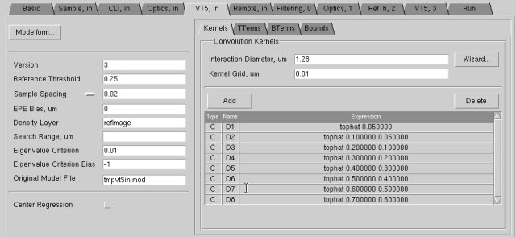

This procedure
describes how to define the nominal VT5 resist model in VT5 Center.
Procedure
- In VT5 Center, choose the VT5,
in tab.
Figure 1. VT5 Center GUI (VT5,
in Tab)
- Click the Modelform button.
Select a starting model template from the list. (See “VT5 Model Form Descriptions” for a list of modelforms.) This sets the basic polynomial equation that
VT5 Center attempts to use to fit the model. You do not need to
modify the column values.
In most cases, selecting modelform
21 or 22 is the best choice.
Tip The results
of selecting a model form may not be visible in the currently active
tab on the right side of the VT5, in tab.
Cycling through the Kernels, TTerm, BTerm,
and Bounds subtabs to verify that your modelform
parameters have been applied.
- Change values on the left
side as defined by the primary characteristics of the model.
- In the Kernels tab
on the right side, click the Wizard button
to interactively set the Interaction Diameter and Kernel Grid fields.
- Optionally, click the Bounds tab
and click Add to place boundary limitations
on any terms.
- Click the Kernels and BTerms tabs
and note whether or not any Dn terms appear in the columns. You
will be using them in “Setting Optimization for the VT5 Model”.
- Proceed to the section “Setting Global Sample Filtering”.